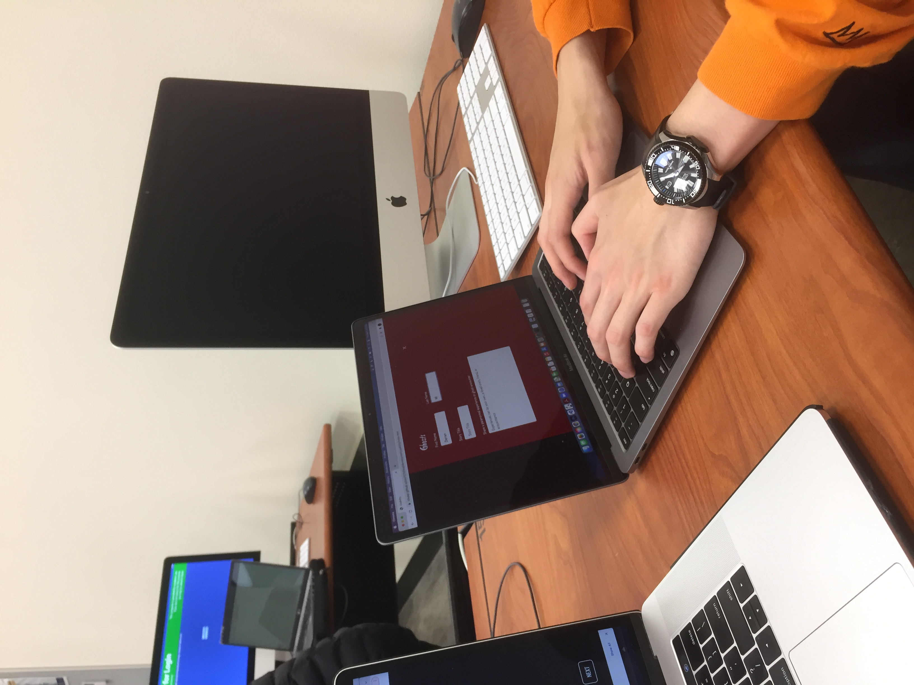
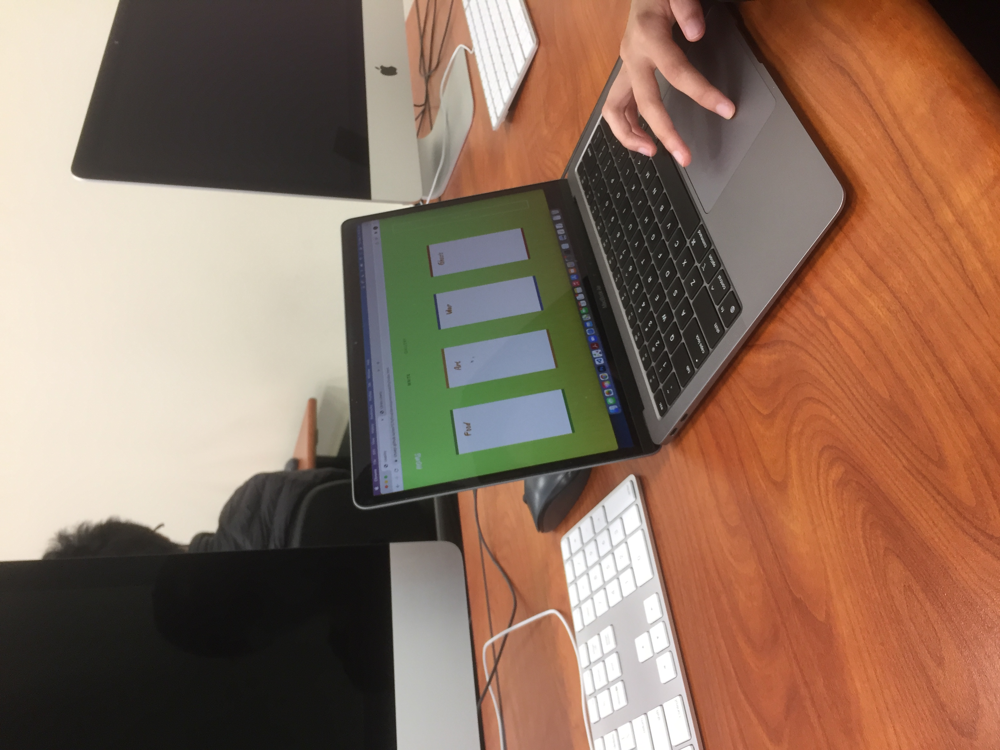

Usability Results
by Chueyi Vue
There is A LOT of work to be done. To be fair, I hadn’t gotten to the illustrations prior to the usability testing so my users didn’t get to see the full extent of my project.
For some general observations, I noticed that my users were very explorative of the space and design because of how empty it was. This seems to be a problem and was addressed by my peers because they discussed that there could be more design elements and better use of the negative space. Despite the minimalist appearance, users were still lost and didn’t understand how the site should be navigated because of the inclusion of a navbar and a sidebar to progress.
The spacing was a core issue that my users pointed out. There is a lot of potential with the space and it seems like elements could be more closely knitted to ease the user’s experience i.e. make the close button near the form and not across the screen. Elements should be placed closer and in different positions to make the progression seamless.

Color and visuals were a problem as well. Users pointed out the lack of contrast because of the white text on a light green background. The illustrations were missing and could have filled in the void that my users were in. Peers have noted to include headers or clearer information in the home page to make it obvious that it is designed for Hmong people. On the topic of the home page, a user advised to make the home page explosive in visuals and color; afterall, it is the home page.
After this experience, I definitely know what to focus on. Visuals and fluidity. I have been struggling getting Back4App to execute what I want it to so I haven’t been able to get around the layout and visual design so after I clear that up, I will definitely ensure that I have incredible visuals, high contrast, and booming colors.